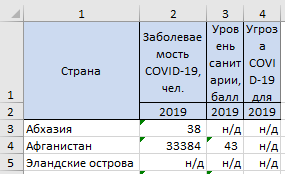

Choose file
N:
First of all you need to download any of datasets from
here
. Then just put .xls file to the input above.
If you need test dataset it can be found
here
.
If you wont execute your own dataset for correct work it need to contain header like this.
